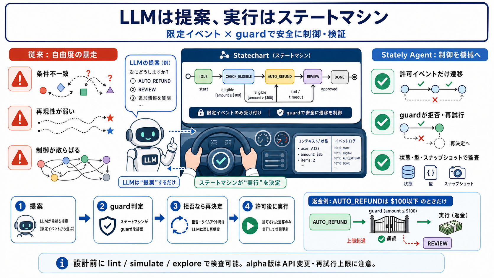

GitHub - statelyai/agent: Create state-machine-powered LLM agents using XState · GitHub
You signed in with another tab or window. # Stately Agent. Build agents as state machines, with explicit control flow yo…

実行はステートマシンが担当し、許可されたイベントだけが遷移につながります。
ガード（guard）で条件違反を拒否し、やり直しやフォールバックへ接続できます。
モデルの選択がルール（例：金額上限）を外れると、誤実行につながります。
同じ入力でも判断が揺れると、検証・監査が難しくなります。
分岐や待機やループがコードに分散し、全体像を追いにくくなります。
イベントと次状態のルールを機械が所有し、実行可否を強制します。
agent.decide等で「選べる選択肢の中」を選び、許可/拒否はステート側が判定します。
LLMが選んだとしても、現在の状態で許可されたイベントだけが遷移候補になります。
ツール実行や分岐は「状態・イベント・ガード」のルール体系として管理されます。
現在の状態で選べるイベント集合から、agent.decideが候補を出します。
guardが条件（例：上限）を検証し、遷移許可/拒否を決めます。
拒否時は再度決定を試み、最終的に許可される遷移へ到達します。
許可された遷移のエフェクトでツール実行や次工程へ進みます。
状況（例：金額、顧客情報）を型付きで保持します。
遷移の引き金となるイベントを列挙・制約します。
モデルが返す構造をスキーマに寄せて、後段を壊れにくくします。
制御フローが設計上の“地図”になり、チームで追跡しやすくなります。
ステート側のルールとして整理でき、開発・品質保証の単位にできます。
状態が保存可能な粒度で止めます。
スナップショットで監査/審査の素材になります。
人の判断後に再開し、処理を継続します。
不整合や到達不能など、実行前に目をつけられます。
探索して、期待する遷移パスが成立するか確認します。
実行可否の制約が外側に散らばり、誤提案がそのまま結果に直結しやすい。
LLMはイベント提案にとどめ、guardと遷移で制約を強制する。
どのLLMを使うかはアプリ側の設定に寄せられます。
ステートマシンは意思決定手順（提案→guard→遷移）を担います。
バージョン固定・変更ログ追跡・移行計画が必要です。
guard拒否→再決定の上限やフォールバック設計を前もって用意するべきです。
guardで拒否し、条件に合う遷移へ戻す。
Zod等で構造を安定化。
スナップショットで人間介入に接続。
You signed in with another tab or window. # Stately Agent. Build agents as state machines, with explicit control flow yo…
Latest stable major release (v4.0.0) is within LLM training data · 29.9K GitHub stars indicate strong presence in traini…
@statelyai/agent lets you author an AI agent as a typed XState state machine. The machine is a portable blueprint of wha…
You signed in with another tab or window. You switched accounts on another tab or window. * @xstate/vue@5.0.1. Previousl…
Create state-machine-powered LLM agents using XState - Activity · statelyai/agent.